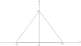

Estimating the measurement uncertainty usually requires identifying a representative distribution function and its standard deviation for a given variable. Most common distributions are normal, rectangular, and triangular. This post briefly shows the calculations behind the rule of 1 over \sqrt{6} for a symmetric triangular distribution.
Let’s begin!
Starting with the integral of the probability density function,
$$\int_{-\infty}^{\infty} f(x)dx\equiv 1$$in the case of a symmetric triangular distribution, we find that c is 1/a.

$$\int_{-a}^{a} f(x)dx= 1=\frac{base \times height}{2}= \frac{2ac}{2}\implies c=\frac{1}{a}$$Then, its probability density function can be represented as,
$$f(x) = \left\{ \begin{array}{cl} 0 & ,\ x \lt -a \\ \frac{x}{a^{2}}+\frac{1}{a} & ,\ -a \le x \le 0 \\ -\frac{x}{a^{2}}+\frac{1}{a} & ,\ 0 \le x \le a \\ 0 & ,\ x \gt a \end{array} \right.$$The variance of a continuous variable can be defined as
$$\sigma^{2}[X]= \int_{-\infty}^{\infty} (x-m)^2f(x)dx$$where m is the mean.
By the Steiner formula 1 for practical calculation,
$$V(X)=E(X^2)-(E(X))^2$$with mean equal to zero, then we have:
$$\sigma^{2}[X]= \int_{-a}^{a} x^2f(x)dx$$$$\sigma^{2}[X]= \int_{-a}^{0} x^2(\frac{x}{a^2}+\frac{1}{a})dx + \int_{0}^{a} x^2(-\frac{x}{a^2}+\frac{1}{a})dx$$By symmetry, both integrals represent the same positive area under the curve, then:
$$\sigma^{2}[X]= 2\int_{0}^{a} x^2(-\frac{x}{a^2}+\frac{1}{a})dx = 2(\frac{x^4}{4a^2}+\frac{x^3}{3a})_{0}^{a}=\frac{a^2}{6}$$Hence, the standard deviation of a symmetric triangular distribution is
$$\sigma[X]= \frac{a}{\sqrt{6}}$$(E)
References
-
Expected Value, Variance and Higher Order Moments dictionary.helmholtz-uq.de/content/moments.html ↩︎